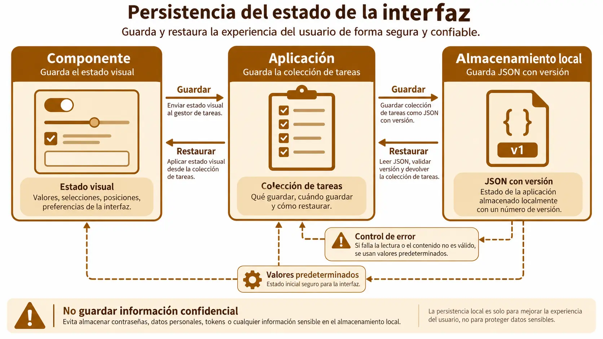

Contenido de la página
Objetivo docente
Separar estado visual y datos persistentes, restaurar una configuración y decidir quién es responsable de guardarla.
Contenido para explicar
Persistir significa conservar información entre ejecuciones. Un componente puede serializar una preferencia propia, pero los datos de negocio suelen pertenecer a la aplicación. Para el prototipo se usa localStorage: es visible y no requiere servidor, aunque no sirve para datos sensibles, sincronización ni grandes volúmenes.

El flujo seguro es: validar → convertir a JSON → guardar con clave versionada → leer → controlar errores → aplicar valores por defecto.
Ejemplo básico resuelto
const KEY = 'damdi.task-list.v1';
function saveTasks(tasks) {
localStorage.setItem(KEY, JSON.stringify(tasks));
}
function loadTasks() {
try { return JSON.parse(localStorage.getItem(KEY)) ?? []; }
catch { return []; }
}La aplicación guarda la colección; cada task-card recibe después sus datos. La versión de la clave permite cambiar el formato en el futuro.
RA3-PB04 · Estado restaurable
Enunciado para publicar
Pide a la IA que conserve tareas y una preferencia visual compact. Recarga la página, elimina manualmente una clave y prueba JSON inválido desde DevTools. Entrega una tabla con caso, resultado esperado y resultado real.
Solución orientativa
Mostrar ejemplo de solución
Las tareas usan damdi.task-list.v1; la preferencia usa damdi.task-card.compact.v1. Al recargar se restauran. Si falta la clave se obtiene una lista vacía y compact=false; ante JSON corrupto la interfaz sigue funcionando y comunica que se han usado valores iniciales. No se almacenan nodos HTML ni funciones.
Comprobación y cierre
Explica por qué la tarjeta no debe guardar toda la lista y qué cambiaría si los datos tuvieran que compartirse entre dispositivos.